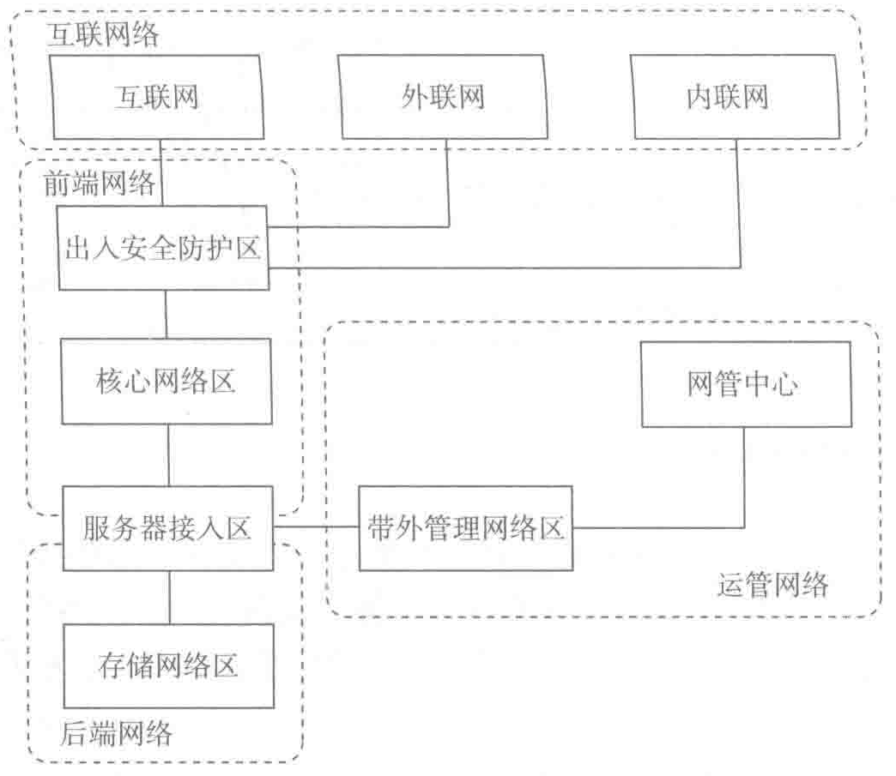

- 环型（Ring）或称为圆型（Circular）拓扑结构；
- 网状拓扑结构（Mesh）；
- 星型拓扑结构（Star）；
- 全连通网状拓扑结构（Fully connected）；
- 线型拓扑结构（Line）或称为链状拓扑结构（Daisy chain）；
- 树型拓扑结构（Tree）：无环的（acyclic）或多向的（multidirectional）；
- 总线型拓扑结构（Bus）。
这 7 种拓扑可以混合使用。实际上，混合结构在网络架构中非常普遍。
GB 50174—2017 中给出了基本的数据中心网络系统架构图（如图 7-2），将数据中心网络系统分为互联网络、前端网络、后端网络和运营网络。

互联网络包括互联网、外联网及内联网，不同网络区域间应进行安全隔离。运营商和大中型的互联网企业都拥有多个数据中心，它们通常位于不同的园区、城市甚至国家。多个数据中心通过广域网互联起来，为不同地区的用户提供数据访问。多中心互联时，可以选择自建光纤链路传输，或者租用运营商传输网络和租用运营商 VPN 业务。
图 7-3 所示是一个典型的多中心互联网络拓扑。
前端网络的主要功能是数据交换。在传统的标准三层结构中，网络组网方式分为核心层、汇聚层和接入层，如图 7-4 所示。
- 接入层：用于连接所有的计算节点，将工作站接入网络，在目前的数据中心中，通常以机柜交换机的形式存在；